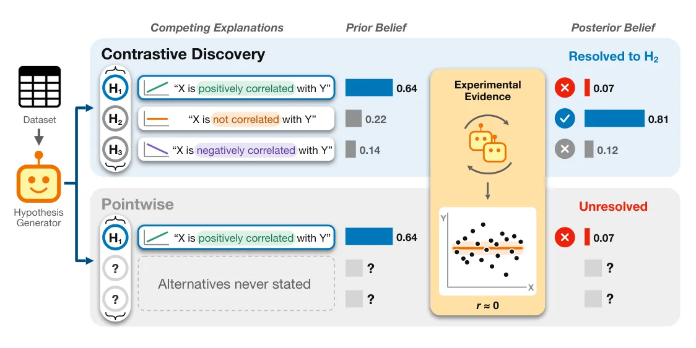
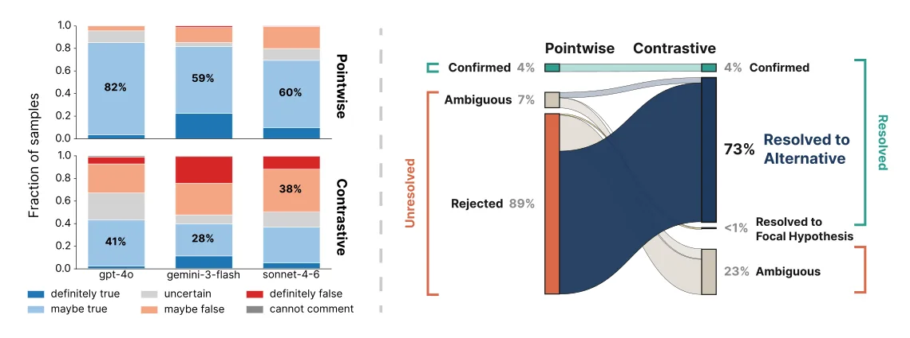
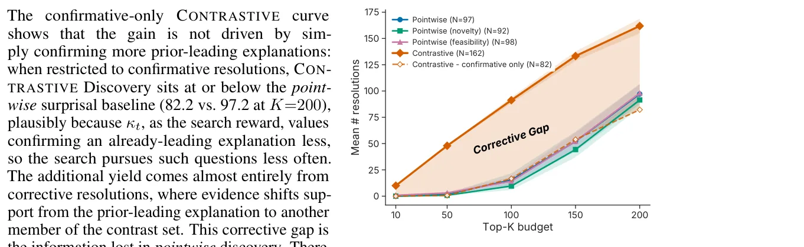

O problema da cegueira direcional em agentes de IA
A autonomia na descoberta científica tem avançado rapidamente, com agentes de linguagem (LLMs) gerando hipóteses, desenhando experimentos e iterando sobre candidatos a descobertas. No entanto, a maioria desses sistemas opera com uma unidade de conhecimento limitada: uma única hipótese. Quando o agente testa uma afirmação empírica h, ele a avalia apenas contra seu complemento implícito, não-h. Se as evidências rejeitam h, o agente aprende que essa explicação é improvável, mas não descobre qual das outras explicações plausíveis é a melhor. Isso cria um gargalo epistêmico: o sistema descarta uma ideia, mas fica no escuro sobre o que fazer em seguida.
Os autores, da Cornell University, identificam que essa limitação é particularmente problemática em tarefas de descoberta aberta, onde não há um oráculo ou chave de resposta para guiar o progresso. Em vez de apenas medir se uma hipótese é verdadeira ou falsa, a descoberta científica real frequentemente envolve discriminar entre várias explicações concorrentes para um mesmo fenômeno. Quando um agente rejeita uma hipótese, ele deveria ser capaz de dizer: 'Esta não é a resposta, mas a evidência aponta para aquela outra'. Os métodos atuais não fazem isso; eles apenas registram a falha.
Essa abordagem ponto a ponto (pointwise) é ineficiente no uso de recursos. Se um experimento já contém informação suficiente para descartar uma teoria e favorecer outra, o sistema atual desperdiça esse insight, exigindo novos experimentos ou novas propostas de hipóteses para chegar à mesma conclusão. O resultado é um ciclo de descoberta mais lento e menos informativo, onde a maior parte do esforço é gasto em rejeições estéris que não avançam o entendimento causal ou correlacional do problema.

A solução: Conjuntos Contrastivos e a estrutura MECE
Para resolver isso, os autores propõem o 'Contrastive Discovery'. A ideia central é substituir a hipótese única por um 'conjunto contrastivo'. Um conjunto contrastivo é definido como uma questão científica pareada com um conjunto de explicações concorrentes que são mutuamente exclusivas e coletivamente exaustivas (MECE). Isso significa que as explicações não se sobrepõem (não podem ser verdadeiros ao mesmo tempo) e cobrem todas as possibilidades relevantes para aquela pergunta específica.
Em vez de perguntar 'A correlação entre X e Y é positiva?', o agente pergunta 'Qual é a relação entre X e Y?', com opções como 'positiva', 'negativa' ou 'inexistente'. Cada experimento é então pontuado não pela veracidade de uma única afirmação, mas por como as evidências redistribuem a crença (probabilidade) entre todas as opções do conjunto. A questão é considerada resolvida quando a crença se concentra fortemente em uma única explicação dentro do conjunto.
Essa mudança é sutil, mas poderosa, pois altera apenas a unidade que o agente propõe e pontua. Sistemas de descoberta existentes, que já possuem módulos para gerar hipóteses, analisar dados e revisar resultados, podem ser adaptados para usar conjuntos contrastivos sem uma reescrita completa da arquitetura. O agente continua coletando evidências, mas agora as usa para comparar rivais explicitamente declarados, transformando rejeições em resoluções direcionais.
Colapso de prior e a ineficiência das rejeições
Os autores analisaram por que os métodos tradicionais falham tanto. Eles observaram um fenômeno chamado 'colapso de prior' (prior collapse). Em sistemas ponto a ponto, a maioria das hipóteses propostas pelos agentes começa com uma crença prévia alta ou moderada (o bin 'talvez seja verdade'). Isso ocorre porque os modelos tendem a propor hipóteses que parecem plausíveis, mas incertas. Consequentemente, há pouco espaço para confirmação (a crença já é alta) e muito espaço para rejeição.
Os dados mostram que, entre os candidatos com maior surpresa bayesiana (surprisal) em testes ponto a ponto, 89% resultam em rejeições. Apenas 4% são confirmações claras. O problema é que, ao rejeitar, o agente não sabe para onde ir. Se a evidência diz que 'X não é positivamente correlacionado com Y', ela pode significar que a correlação é negativa ou nula. O método ponto a ponto trata essas duas possibilidades como um único bloco 'não-h', perdendo a informação discriminatória contida nos dados.
Para testar se essa informação estava lá o tempo todo, os autores realizaram um experimento pós-hoc. Eles pegaram as mesmas evidências que levaram a rejeições ponto a ponto e as aplicaram a conjuntos contrastivos artificiais. O resultado foi revelador: 73% dessas rejeições poderiam ter sido resolvidas para uma alternativa específica se o sistema tivesse avaliado as opções concorrentes. Isso prova que o gargalo não é a falta de dados, mas a forma inadequada de interpretá-los.

Resultados: Eficiência e concordância humana
Os experimentos foram conduzidos em seis domínios científicos diferentes. Quando os conjuntos contrastivos foram usados para guiar a busca ativa do agente, o sistema resolveu 67% mais perguntas científicas do que o método ponto a ponto usando o mesmo orçamento de experimentos. Isso significa que, com o mesmo custo computacional e de tempo, os agentes obtêm mais conhecimento estruturado e conclusivo.
Além da eficiência, a qualidade das descobertas foi validada. Em um estudo cego, 38 especialistas humanos avaliaram as questões resolvidas pelos agentes. Os especialistas concordaram com a explicação escolhida pelo agente em 78% dos casos resolvidos. Ainda mais impressionante, em 82% das questões onde o agente ponto a ponto apenas rejeitou a hipótese e parou (falhando em resolver), os especialistas concordaram com a alternativa que o agente contrastivo havia identificado. Isso sugere que o método não apenas economiza recursos, mas também produz inferências mais alinhadas com o julgamento humano especializado.
Os autores também realizaram ablações para garantir que o ganho vinha da estrutura contrastiva e não de outros fatores. Eles verificaram que o benefício persistia mesmo quando controlados por custos de tokens e dólares, diferentes regras de pontuação e limiares de resolução. Isso reforça a robustez da abordagem: a representação explícita de explicações concorrentes é o fator chave para o aumento na produtividade epistêmica.

Implicações para o futuro da IA científica
A introdução do Contrastive Discovery marca uma mudança de paradigma na forma como avaliamos o progresso de agentes de IA em tarefas abertas. Em vez de buscar a 'verdadeira' hipótese isoladamente, o foco passa a ser a discriminação entre rivais plausíveis. Isso se alinha melhor com a prática científica real, onde teorias são refinadas e substituídas por melhores explicações, não apenas aceitas ou rejeitas em um teste binário.
Para desenvolvedores e cientistas de dados, a lição é clara: a estrutura do espaço de hipóteses é tão importante quanto a qualidade dos dados. Ferramentas de descoberta automatizada que ignoram a estrutura de alternativas concorrentes estão, efetivamente, operando com uma visão de túnel. Ao adotar conjuntos contrastivos, podemos extrair muito mais valor dos mesmos experimentos, reduzindo o desperdício computacional e acelerando a geração de conhecimento confiável.
Este paper não propõe uma nova arquitetura de rede neural, mas uma nova lógica de avaliação. É um lembrete de que, em sistemas complexos, pequenas mudanças na representação do problema podem levar a ganhos exponenciais na eficiência da busca. A descoberta científica autônoma está amadurecendo, e parte desse amadurecimento exige que aprendamos a fazer as perguntas certas, não apenas a testar respostas isoladas.
O que fica
- Métodos ponto a ponto rejeitam hipóteses mas não identificam a alternativa correta, desperdiçando informação.
- O novo método usa conjuntos MECE (mutuamente exclusivos e coletivamente exaustivos) para redistribuir crenças.
- Em testes, o método resolve 73% dos casos onde a abordagem padrão falhava, concordando com 78% de especialistas.
- Permite reavaliar dados já coletados sem novos experimentos, aumentando a eficiência do orçamento computacional.
Paper original: Contrastive Discovery: Open-Ended Scientific Discovery over Competing Explanations
Comentários
Nenhum comentário ainda. Seja o primeiro.